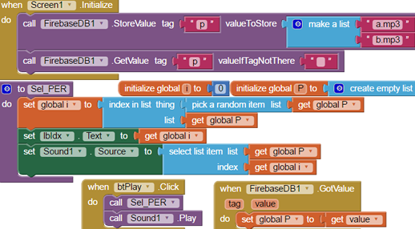
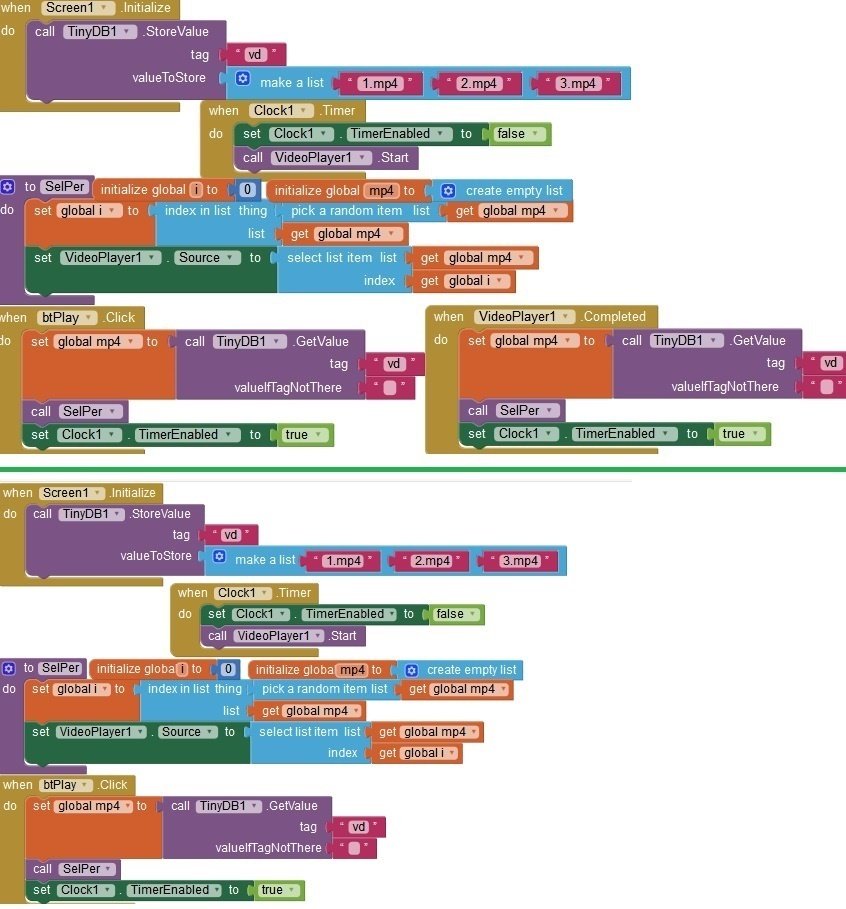
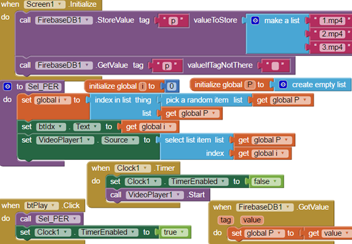

| TinyDB | TinyWebDB | Firebase | ||
Músicas Aleatórias (Firebase)

Vídeo Aleatório (btPlayVd_e) (by Joe) Toca random e quando terminado escolhe outro e toca também,. o atualize. Esse atualize pode-se criar um temporizador para o usuário n ficar dando atualize a todo momento e "congestionar o sistema"
interval: Cuidado em properties! valor em torno de 11 apresentou instabilidade. Não sei se por causa da rede ou outro fator.
btPlay: Se bloco Clock1 vier antes do bloco VideoPlayer1 o ckt é nulo
CKT 2 - e igual o primeiro exceto pela ausência do .Completed. Nesse ckt, ao terminar o conteúdo não escolhido outro automaticamente para tocar.

Vídeo Aleatório - Firebase

Cou_VariosTipos_Index (TinyWebDB, Firebase) - Vide ckt em App Inventor.
valueTagNotThere (btPlay3): pode ser colocado "tag não achada".
Cou_VariosTipos_Index_2 (Firebase) - Vide ckt em App Inventor.
inspirado em....
https://www.youtube.com/watch?v=7nT1NHJngnA
https://www.youtube.com/watch?v=LN6wTT2dQCU&t=83s
Save2 (TinyDB1) - Vide App Inventor.
https://www.youtube.com/watch?v=3RYDwCQ-QiI
ckt incompleto. n axei procedure com return.
ckt q guarda a configuração escolhida pelo usuario
ao reabrir o app, ele mantem. N DEU CERTO!!
db_MySQL Vide App Inventor
https://www.youtube.com/watch?v=s05UN-UKwBo